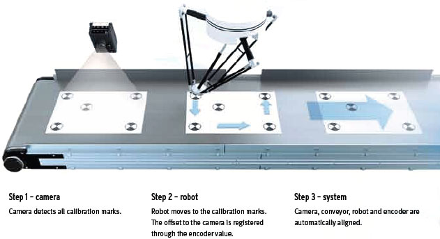

The new FQ-M series is a vision sensor designed specifically for Pick & Place applications. It comes with EtherCAT embedded and can be integrated easily into any environment. The FQ-M is compact, fast and includes an incremental encoder input for easy tracking calibration.
Omron's Sysmac Studio software is the perfect tool for configuring the FQ-M and is complemented by the TouchFinder console for on-site monitoring.
Building Automation
Industrial Automation
Power Automation & Safety


Bangladesh Distributor
FQ-M Series
Vision Sensor
Designed for motion tracking
about this Product Family
Related Contents
- Sensors
- Vision Sensors / Machine Vision Systems
- Features
- Lineup
- Specifications
- Dimensions
- Catalog
last update: December 13, 2012
Smart camera to guide your robot!
Easy set-up & integration
With intelligent wizards for calibration and communication integration into your machine is easier than ever. The FQ-M communicates with all devices via EtherCAT, or standard Ethernet. The communication wizard lets you easily configure any robot protocol both as a server or as a client without complex programming.
Fast detection & high stability
The FQ-M can detect up to 32 pieces at once and more than 5000 pieces per minute. The new contour based search algorithm ensures the highest reliability.
"On-the-fly" tracking
Synchronized control is even easier, because the FQ-M vision sensor has an in-built encoder input for accurate conveyor tracking and easy calibration. The FQ-M is able to output position coordinates and the correlative encoder values and is able to manage the object queue, so that no object's coordinates are duplicated.
Easy set-up & integration with motion
Programable out put format for your pick & place robot
Configuration as a server or as a client without complex programming.
Sysmac Studio for fast configuration
The Vision Editor of the Sysmac Studio software will help you to program the optimum vision setting. Intuitive and icon driven set-up and configuration.

TouchFinder for monitoring on-site
With the intuitive TouchFinder console - which fits in the palm of your hand - you can access all functions and settings quickly and easily.Fast detection and high stability
The new contour based search algorithm offers unique performance for pick & place applications.
Changing lighting conditions, reflection, object inclination or partially hidden objects are no longer a problem. The FQ-M delivers a stable result even at high speed, no matter how many objects have to be detected at the same time.
Best in class performance
High-speed processing
5000 pcs/min with 360° detection.
Only 15 ms time difference, detecting 10 objects or 30 objects at once.
Stable and reliable detection, even if objects are overlapped or partially hidden.
Changing light conditions have no influence on the position accuracy.
Encoder input for simplified calibration & tracking

Panorama view - Parameter setting for ideal object detection
A panoramic view can be created from 3 different images, allowing easy parameter optimisation.
Objects that overlap within more than one field of view are segregated and only inserted in the picking queue once.
First shot
The position and orientation of objects 1, 2 and 3 is detected and added to the picking queue.
Next shot
Object 2, 3 and 4 are detected, but only the data of object 4 is evaluated. Position and orientation of objects 2 and 3 is ignored because they were already added to the queue with the shot before.last update: December 13, 2012